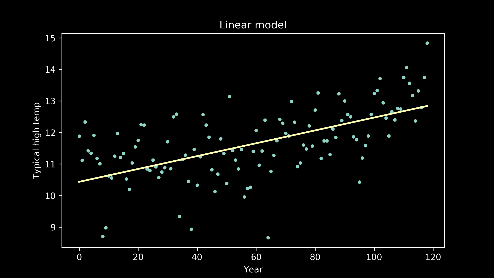
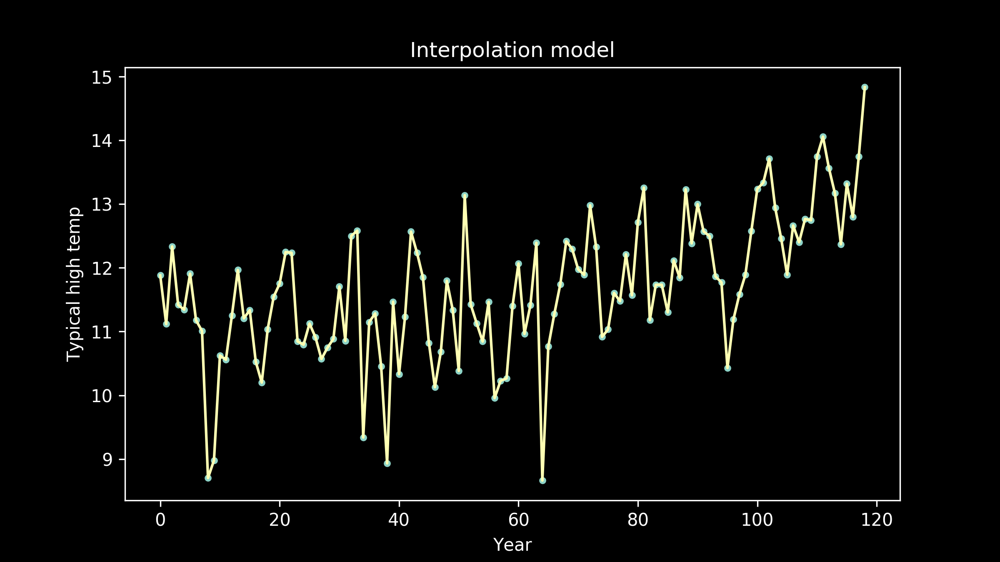

- Part 1: Choosing between models [post]
- Part 2: Separating signal from noise [post]
- Part 3: Choosing a loss function [post]
- Part 4: Splitting the data [post]
- Part 5: Choosing model candidates [post]
- [slides] [code]
Separating signal from noise
A model is a story we tell about our data. It is always different from the data itself. It is a simplified version, a cartoon picture, with bold edges and even shading. There are always many stories that can be told by the same data set.
When we are building a model, we are making the assumption that our data has two parts, signal and noise. Signal is the real pattern, the repeatable process that we hope to capture and describe. It is the information that we care about. The signal is what lets the model generalize to new situations.
The noise is everything else that gets in the way of that. It is imperfections in our sensors, typing things in wrong, variations driven by forces that we can’t or don’t try to model. It is all the other stuff.
It’s easy to picture the difference between signal and noise if you imagine listening to your favorite playlist in the middle of winter while there is a heater running nearby. The music is the signal. That’s the thing that you want to track and absorb. The heater fan is noise. It is additional variation piled on top of the signal. And if it gets too loud, it becomes impossible to follow the flow of the signal.
The challenge
It is the goal of models to describe the signal, despite the noise.
A perfect model describes the signal exactly, and ignores all of the noise. If a model fails to capture all of the signal, that type of error is called bias. If a model captures of some of the noise, that type of error is called variance. Too much bias in our model means that it will perform poorly in all situations because it hasn’t captured the signal well. You may also hear this called underfitting. This was the case when we fit a straight line to our temperature data. It didn’t capture the underlying pattern well, and because of that, had a much higher error then the rest of our candidates.
A linear model fit to this data has high bias.
Too much variance in our model will also cause it to fail. It won’t generalize well. Instead of capturing just the pattern we care about, it will also capture a lot of extraneous noise that we don’t care about. The patterns in the noise will be different from situation to situation. When we try to generalize and apply or model to a new situation, it will have extra error. This is also called overfitting. The more complex our model, the greater the risk of overfitting. This was the case in the connect-the-dots interpolation model.
Overfitting is tempting. Don’t fall for it.

The 95% confidence interval suggests Rexthor's dog could also be a cat, or possibly a teapot. (https://xkcd.com/1725/)
The fix
The way to protect against underfitting is to try several different types of models. Each model has its own strengths and weaknesses, patterns that it finds more easily and more accurately, and other patterns that it struggles with. By trying a variety of models, we have the best chance at pulling out the patterns hidden in our data. Our best defense against bias is a rich pool of candidate models.
To protect against overfitting, we make sure to test how well each trained model generalizes. After training it on one set of observations, we then use it to predict the pattern in another set of observations. If the predictions are accurate, then we know our model is good, and our variance is low. If it makes much worse predictions on the test data set then on the training data set, then we know that the model overfitted the training data, that it captured a lot of noise, rather than just signal.
We're really getting warmed up now. Next in part 3 we'll consider a question that can make or break our model selection: choosing the right error fuction.